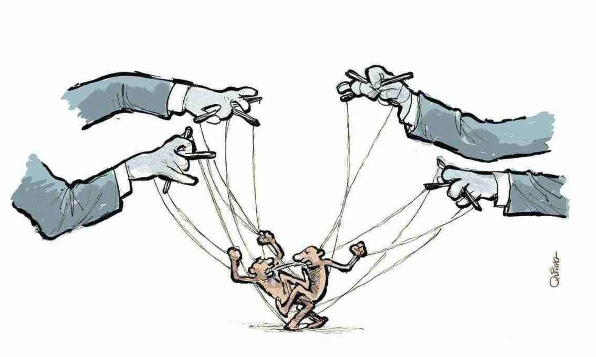

Qual o impacto e as consequências as Fake News causam?
As fake news causam impactos políticos e sociais ao distorcer o debate público, manipular opiniões e fomentar conflitos entre grupos.
Elas comprometem o funcionamento da democracia e enfraquecem o tecido social.
A desinformação nessa esfera não apenas manipula decisões eleitorais, mas também estimula a intolerância, mina a confiança em instituições e destrói reputações.
Os efeitos, muitas vezes, são duradouros e difíceis de reparar.
As fake news impactam os meios de comunicação ao desvalorizar o jornalismo, enfraquecer a credibilidade da imprensa e dificultar o acesso à verdade.
Elas geram desconfiança generalizada e favorecem o consumo de conteúdo não verificado.
Com isso, jornalistas enfrentam crescentes ataques e dificuldades para atuar com liberdade e responsabilidade.
Manipulação política

As fake news são ferramentas poderosas de manipulação política.
Elas são usadas para atacar adversários, influenciar resultados eleitorais e promover ideologias com base em mentiras.
Durante campanhas, é comum surgirem boatos com falsas acusações, vídeos editados ou teorias conspiratórias.
Isso desvirtua o processo democrático e leva o eleitor a decidir com base em desinformação.
Mesmo quando as mentiras são desmentidas, o estrago costuma persistir, pois a emoção provocada pela fake news é mais duradoura do que a correção dos fatos.
Desconfiança nas instituições
A disseminação contínua de notícias falsas sobre o funcionamento das instituições públicas enfraquece a confiança popular.
Quando o cidadão começa a duvidar do sistema judiciário, do processo eleitoral ou das universidades, o pacto social se rompe.
Isso favorece discursos autoritários e dificulta a implementação de políticas públicas.
Polarização e intolerância
Fake news alimentam a polarização ao reforçar estereótipos e provocar o embate entre grupos com visões opostas.
Elas criam uma realidade distorcida onde os “inimigos” estão por toda parte e devem ser combatidos.
Isso desestimula o diálogo, incentiva o ódio e transforma o debate público em um campo de batalha.
Grupos se isolam em bolhas informativas e passam a rejeitar qualquer informação que contradiga suas crenças.
O resultado é uma sociedade mais agressiva, menos empática e com pouca disposição para o consenso.
Danos à reputação

Uma única fake news pode destruir a reputação de uma pessoa, empresa ou instituição.
Mesmo quando a verdade é restabelecida, o dano já foi feito e muitas vezes é irreparável.
Boatos sobre crimes, traições, falências ou escândalos sexuais se espalham rapidamente e geram julgamentos instantâneos nas redes sociais.
Muitas vítimas têm suas vidas pessoais e profissionais afetadas por algo que nunca aconteceu.
O cancelamento público baseado em mentiras é uma das formas mais cruéis de linchamento virtual.
Prejuízos econômicos
Notícias falsas também afetam a economia.
Informações mentirosas sobre falências, instabilidades no mercado ou medidas do governo podem provocar queda de ações, fuga de investidores e pânico financeiro.
Empresas e marcas atingidas por boatos têm perdas milionárias e sofrem com queda de confiança entre clientes e parceiros.
O impacto vai além do setor privado: até políticas públicas podem ser prejudicadas quando a população desacredita de dados econômicos oficiais por causa de narrativas falsas.

Desvalorização do jornalismo
A proliferação de fake news gera uma crise de confiança no jornalismo profissional.
O público passa a duvidar até de reportagens bem apuradas, acreditando que “tudo é manipulado”.
Isso desvaloriza o trabalho dos comunicadores, reduz a audiência de veículos sérios e fortalece influenciadores não qualificados.
Além disso, compromete o papel fiscalizador da imprensa, que passa a ser vista como parte de uma “conspiração”, mesmo quando está apenas cumprindo sua função de informar com base em evidências e fontes confiáveis.
Desafio à verdade
As fake news desafiam a própria noção de verdade ao criar versões alternativas da realidade.
Quando mentiras são repetidas à exaustão, elas se tornam plausíveis para parte da população.
Isso torna o trabalho dos jornalistas mais difícil, pois não basta informar: é preciso constantemente desmentir o que já foi amplamente compartilhado.
A credibilidade da imprensa fica em risco, e o espaço público se enche de ruídos, dificultando o entendimento dos fatos.
A busca pela verdade vira uma batalha desigual em meio à avalanche de desinformação.